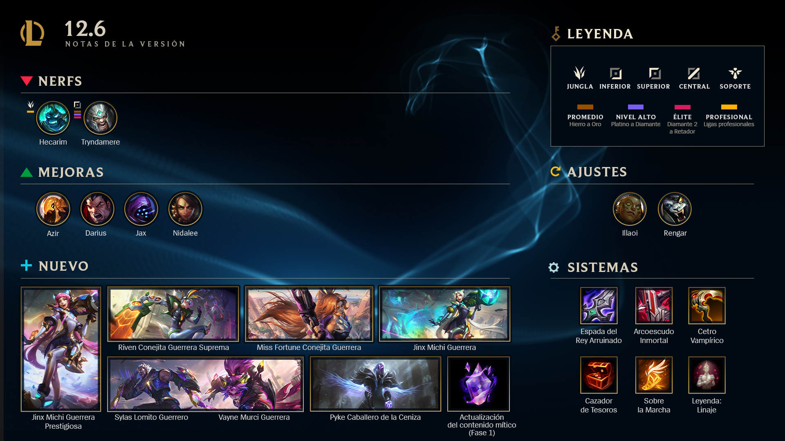

Notas de la version 12.6 De League Of Legends
Notas del parhe 12.6
¡Formen su escuadrón para la versión 12.6!
Escuadrón Animalia, eso es. Ha pasado mucho tiempo desde los cambios de balance dentro de la versión 12.5, así que hay mucho por contar esta semana. Además de algunos aspectos nuevos y geniales de ciencia ficción, tenemos un montón de mejoras y debilitaciones, una serie de ajustes a Rengar y cambios sistémicos a runas y objetos de sustento. ¡Por fin está aquí la fase 1 de la Actualización del contenido Mítico! Sigan leyendo para saber más sobre la Esencia Mítica, la Tienda Mítica, los Aspectos Prestigiosos disponibles y una actualización en la fase 2.
Como sea, de vuelta a la Grieta, porque escuché que las normas están algo sospechosas esta semana...
¿Su equipo mecha de lucha contra el crimen aún no está en línea para una cola flexible de 5 personas? ¡No se preocupen, pueden leer sobre su combatiente favorita Conejita Guerrera mientras los esperan en las notas de la versión de TFT aquí!
Resumen breve

Riven Conejita Guerrera Suprema, Miss Fortune Conejita Guerrera, Vayne Murci Guerrera, Sylas Lomito Guerrero, Jinx Michi Guerrera y Jinx Michi Guerrera Prestigiosa estarán disponibles el 31 de marzo de 2022.
Camepones
Azir:
Un pajarito nos dijo que Azir ha estado débil y las cifras nos indicaron que el pajarito decía la verdad. La confirmación definitiva fue su falta de presencia en la escena profesional en un metajuego en aumento que debería favorecerlo, por lo que le daremos algo de poder de estadísticas básico para ayudar al Emperador de Shurima en todas las llaves de habilidad.
ESTADISTICAS BASICAS
- CRECIMIENTO DE VIDA 92 ⇒ 105
- VIDA EN EL NIVEL 18 2116 ⇒ 2337